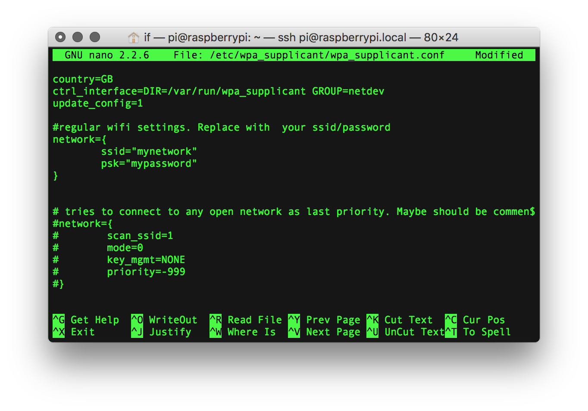
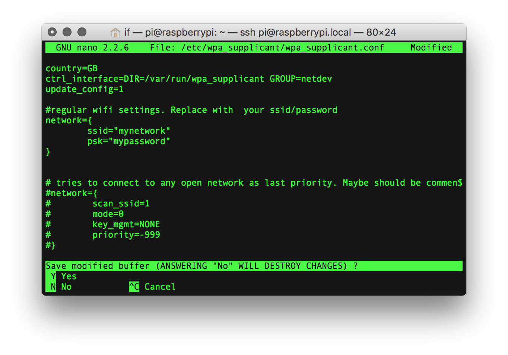

Connecting to your local wireless network
The first time you boot your Prynth it will try to connect to a network via Ethernet or the first WiFi it finds that doesn’t require a password. This is useful for a first setup, but you should change this default behavior or you might end up connected to some unknown network. To setup your own wifi you need to:
1.Log into your Raspberry Pi using SSH and then type:
sudo nano /etc/wpa_supplicant/wpa_supplicant.conf

- This will take you to a text editor, through which you should write your network name and password, using the following format and substituting “mynetwork” and “my password” for your own.
network={ ssid="mynetwork" psk="mypassword" } - Next comment the other network entry by adding numeral signs in front of each line. It should look similar to this: 
- Finally to save and exit by pressing Ctrl+x and typing “y” for yes. 